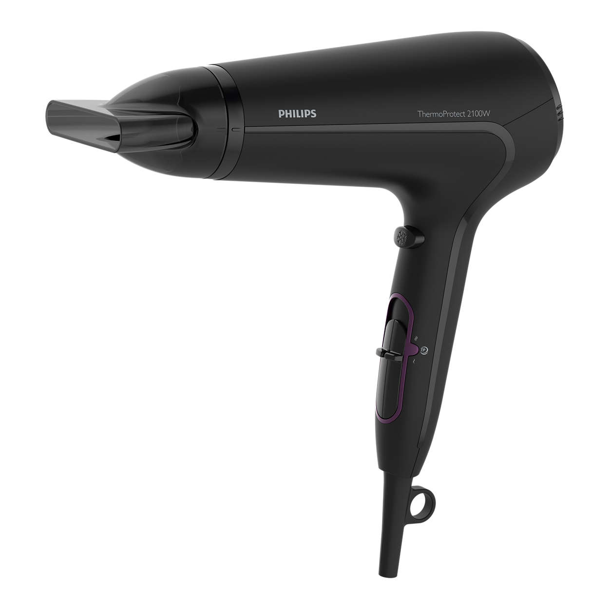

The Hair Tools That Will Change Your Life — And How to Use Them
Whether you’re a seasoned pro or just starting out in the business, there are some basic tools that belong in your kit. Our advice is to do your homework before making any purchase and to consider the tools of your trade as an investment. After all, it’s your livelihood that’s at stake. To make things easy, we’ve come up with a list of items that are absolutely essential for building the perfect and a healthy hair.
Table of Content

Dryers
| Brand | Features | Type | How to use | Price | |
|---|---|---|---|---|---|
|  | Philips HP8230/03 | Features six-speed heat settings to provide full control. 2,100 watts professional power for similar results to beauty salon. Perfect styling thanks to thin styling nozzle. Equipped with an airflow filter that can be removed for quick and easy cleaning. | Philips | Be sure to move the hair dryer constantly throughout the drying process, and do not fasten it to a single strand of hair for a long time. | QR 198 |
| Sonashi SHD-3008 | Feautures both hot and cool air. Equipped with a 2012 AC/cold air engine. Two-level settings for heat and airflow. Two-level settings for both airflow speed and heat. Power: 2000 WATTS 220-240 volts ~50/60 Hz | Sonashi | It is used by connecting it to electricity and works with a stop and run button and has the property of raising the heat and reducing it | QR 69 | |

|
Braun Satin Hair 5 HD585 | Built-in design hairdryer Satin Hair 5 - HD-585. Fast and easy to dry, Brown Satin Hair Power Production dryers combine strength and lightweight design for non-include styling possibilities. Facility with dispenser for aromatherapy essential oils. Ionic property for clearly less rough hair. Easy to styling. Comfortable and lightweight design. | Braun | Press the cold air splash button for a few seconds to get out of your hairstyle, this will cool your hair and stabilize the styling. The cold air splash also protects your hair. | QR 185 |
| Revlon 1875W | Titanium technology transfers heat quickly for fast drying and styling while helping reduce over-drying to fight frizz and enhance shine. 3-Heat/2-speed settings for true customization for all hair types and textures. | Revlon | Press the play button then wait seconds, spread the airflow on your hair and comb your hair at the same time. | QR 109 | |
| KIPOZI Hair Dryer | Portable Weight and Compact Size. Attractive shape, light weight, easy to carry and store, perfect for home and travel, convenient use at any time in any place. Auto Leakage Protection. Good and safe for hair care.. The ideal personal care for family, More secure in use. | KIPOZI | Press the play button, then choose the heat you want, spread the airflow on your hair to make your hair softer. | QR 239 | |
Straighteners
| Brand | Features | Type | How to use | Price | |
|---|---|---|---|---|---|
| Braun | Wide sheets, Wide panels To achieve silky and flowy hair is not difficult and it doesn't take much time, Mechanical temperature regulator. | Braun | Use them with a paddle brush or comb to soften, wave or curl hair, avoid lifting them to high-level temperatures | QR 186 | |
| Sanford SF9768HS | Simple and easy to describe and a great fully touched structure, heating and quickly restoring heat. | Sanford | It works through an electrical cord, avoiding adjusting the temperature of the hair dryer to the highest level , grap a piece of your hair, and then straighten it out | QR 84 | |

|
Philips HP8321 | Perfectly smooth hair. Prepare for any occasion and get perfectly smooth hair thanks to 100 mm long ceramic tourmaline sheets. Philips hair smoothies help you get the right hair shape at high speed thanks to a running temperature of up to 210°C and quick heating time. | Philips | Make sure that always blow dry your hair before straightening, grap a piece of your hair, and then straighten it out | QR 165 |
| Sam Villa SLEEKR | Straightening iron that quickly smooths and curls hair, providing incredible shine and smoothness. | Sam Villa | Use with a paddle brush or comb to smooth, wave or curl hair. | QR 439 | |
 |
REVLON Salon Straightener | Short plates ideal for getting close to the scalp and the smoothest trending looks Advanced copper 3x Ceramic PLATE technology helps reduce damage from over-styling through even heat distribution Unique true-grip rounded floating plates provide total contact for consistent results | REVLON | Press the play button, choose the right heat for your hair, grab a piece of your hair, and then straighten it out. | QR 106 |
Spray bottles
| Brand | Features | Type | How to use | Price | |
|---|---|---|---|---|---|
| Sun Bum Blonde | This hairspray infused with our signature Fluid-Fix Technology for flexible hold and natural movement. The Spray also has refreshing notes of Rose and Jasmine HAIR SPRAY FOR VOLUME: salon-quality, micro-fine finishing spray keeps hair fresh throughout the day | Sun Bum | Spray on your hair five minutes after washing then comb your hair | QR 64 | |
| Babunj Spray | CURLS & WAVES STYLING CREAM. Our curly and wavy haired crew loves this lightweight styling cream! It delivers light hold with long-lasting, frizz-free, shiny curls while protecting your hair from UV rays without the crunch. | Carasa | Shake well,spray on the hair then comb your hair | QR 59 | |
| Pantene Hairspray | STYLE WITH STRENGTH Pantene Pro-V Volume High Lift Hairspray locks in volume, body and fullness GOES ON SMOOTH Our nutrient-infused formula dries quick for non-sticky style | Pantene | It's best to use after hair washing, Shake can well, Spray evenly on dry styled hair to finish | QR 54 | |
| Kenra Artformation | Provides volume and styling control. Long-lasting firm hold. Fast-drying | Kenra | Shake Well. Hold can 8–10 inches from hair, and spray | QR 62 | |
| John Frieda Frizz | Protects from frizz while enhancing natural curls and waves without stickiness or heat styling. | John Frieda | Shake well and spray liberally on damp hair to distribute evenly. Scrunch hair in small sections to help create definition. Air dry hair or blow dry using a diffuser. For second day hair: spritz and scrunch hair to reinvigorate wilted curls or waves. | QR 24 | |
Steamers
| Brand | Features | Type | How to use | Price | |
|---|---|---|---|---|---|
| Hair Steamer EZBASICS | Professional quality hair care & treatment steamer. Provides valuable nutrients to your hair, prevents breakage and split ends, treats brittle & damaged hair. Moisturizes your scalp to prevent dandruff and give your hair that full, healthy & shiny look. | EZBASICS | Use the steamer for five minutes before applying your deep conditioning treatment. This will give each cuticle a moment to open up. | QR 290 | |
| KINGDOMCARES | Powerful atomizer generates ultra-fine mist that can be quickly and easily absorbed by hair or skin, it can help facial mask processing and hair steaming. Standard salon hair care hot mist steam effectively promotes hair treatment cream absorption. Besides hair and skin care, the large capacity steamer can be used for interior humidifying and extra chamber to warm towels. | KINGDOMCARES | When put the dried flowers or cotton pad into the pollen box, please DO NOT let them block thesteamer nozzle. | QR 230 | |
| Topbarber Ionic Hair | Allows you to enjoy the spa at any angle. You can add your favorite essential oils to achieve different good effects. Simple buttons has two functions: Ozone and steam Safety water line setting, it will automatically power off on the situations of over or less water capacity. Portable and desktop design, user-friendly. | Topbarber | Start your wash with a steam and end with more steam. Apply your conditioner and then use the steamer again for a full 15 minutes | QR 256 | |
| Elitzia ET1409W | High temperature and cold mist dual water tank design, atomization tablets will not be affected by the effects of high temperature, so that the atomization sheet life is longer. Large-capacity water tower design, can work 4-6 hours after filled with water, use faster, more convenient, steam will not stop if pour water during use. | Elitzia | Open the water valve after use, pour out the remaining water in the water tank and clean it to extend service life. If the room temperature is below 12℃, pour pure water not higher than 40℃. Pay attention to your hands and feet away from the drain to prevent burns. | QR 2,419 | |
| Conair 1875 Watt Pro | 875 watts for powerful drying Extra-large hood accommodates a set of jumbo rollers Variable airflow settings for maximum styling comfort Even airflow distribution Adjustable height 2 heat/speed settings Carry handle 6-foot long cord stores in base. | Conair | Turn it on and sit under it to deep condition or simply to dry your hair | QR 146 | |
Massagers
| Brand | Features | Type | How to use | Price | |
|---|---|---|---|---|---|
| Freatech | Dry and wet manual head scalp massage brush (no battery required) | FReatech | Clean your hair roots and massage the scalp, stimulate scalp cells for scalp treatment | QR 25 | |
| Vebiys Hair Scalp | Get a relaxing massage every time you wash your hair. It is small in size and easy toplace and carry | Vebiys | MANUAL OPERATION - Scalp scrubber for hair does not require batteries and is completely water proof. | QR 21 | |
| Vitagoods Scalp Massaging | Take your shower or bathtime to the next level by incorporating the Vitagoods Scalp Massaging Shampoo Brush to your routine. It lets you enjoy the benefits of a scalp massage the fast and easy way! WATER-RESISTANT CONSTRUCTION | Vitagoods | Apply a small amount of your shampoo to your scalp and distribute through the roots of yours> hair. Press the on/off button to activate the vibration to desired speed on your Scalp massaging shampoo brush. hold the massager in the palm of your hand with the rubber tips | QR 89 | |

|
Hair Scalp Massager | Shampoo brush with perfect grip handle to fit your hand comfortably (Manual with no battery required & Waterproof) Scalp massager with soft thick silicone bristles stimulate blood flow to the scalp and oil glands (Deep clean and exfoliate the scalp) | Maxsoft | Massage your scalp and deep clean scalp with less shampoo and conditioner | QR 32 |
| Vanity Planet Scalp | REJUVENATING & CLEANSING SCALP MASSAGER: Get all of the benefits of a salon scalp massage in your own shower. including dense and thick hair, braids, extensions, and weaves. For wet or dry use. Battery-powered (battery not included). | Vanity Planet | Massage your scalp and deep clean scalp with less shampoo and conditioner | QR 73 | |
Spa caps
| Brand | Features | Type | How to use | Price | |
|---|---|---|---|---|---|

|
Tifara Beauty | Cordless, Non electric, Heat activated, Microwaveable | Tifara beauty | No batteries or cords are required to power the cap | QR 54 |

|
PrettySee | Upgarde Design - Equipped with longer and wider size, much more suitable for thick andcurly hair. | PrettySee | After DIY dyeing the hair put on the shower cap and then our heating helmet for about 15 min | QR 95 |
| Blue Floral | Self hair conditioning care at home Make your hair look more healthier and moisturized | Y.F.M | Wash your hair first with shampoo. Apply oil or conditioner evenly to hair. then wear the shower cap. Connect the plug to power, switch to the stall you want. The hat will start to heat, it will be better to last 15-20 mins. The button divided into 3 choices, (low/turn off/high) you can choose which suitable according to your need. The proper heating allows you to get the best effect of the hair. | QR 74 | |
| Luckyfine 110V | Convenient to use, surely be an indispensable tool to heal your hair at home. It comes with a printed shower cap. | Y.F.M | Put mask or hair oil for five minutes in the shower and then wash off, that sit with them for 45 minutes under the thermo-cap. Even a weekly course (15-30 minutes at a temperature of 45-65 ° C) of revitalizing and nourishing masks and oil serums helped to restore the hair's softness, smoothness and shine. | QR 69 | |
| 110V Electric Hair Cap | The inner embedded plastic film is waterproof and anti-electricity, and it's detachable and convenient to be washed. Two level of temperature controlling, you can adjust to your favorite temperature. | Holady | Put mask or hair oil for five minutes in the shower and then wash off | QR 49 | |